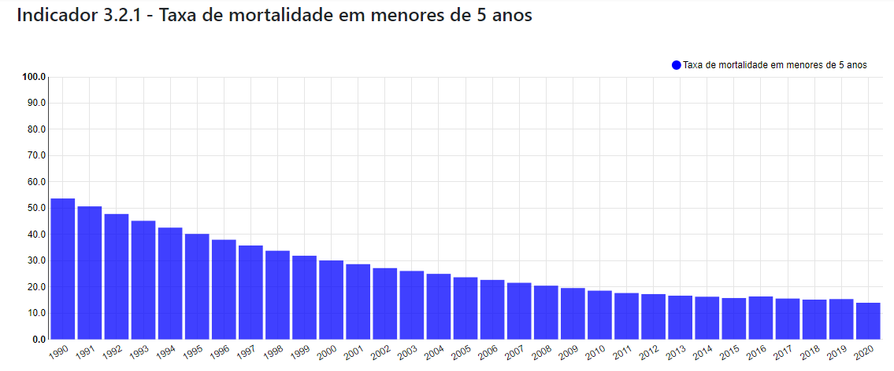

- O.D.S.-3
- O.D.S.-3
Saúde e Bem Estar
Objetivo de Desenvolvimento Sustentável
3.2
Nações Unidas: Até 2030, acabar com as mortes evitáveis de recém-nascidos e crianças menores de 5 anos, com todos os países objetivando reduzir a mortalidade neonatal para pelo menos 12 por 1.000 nascidos vivos e a mortalidade de crianças menores de 5 anos para pelo menos 25 por 1.000 nascidos vivos.
Brasil: Até 2030, enfrentar as mortes evitáveis de recém-nascidos e crianças menores de 5 anos, objetivando reduzir a mortalidade neonatal para no máximo 5 por mil nascidos vivos e a mortalidade de crianças menores de 5 anos para no máximo 8 por mil nascidos vivos.
Indicadores
3.2.1 - Taxa de mortalidade em menores de 5 anos
3.2.2 - Taxa de mortalidade neonatal
